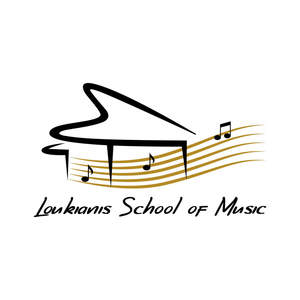

Trade Mark Journal No.2025/009 28 February 2025
UK00004161927 18 February 2025 (41)

- Class 41
- Teaching of music; Music education; Instruction in music; Music instruction; Teaching; Music publishing and music recording services; School services for the teaching of art; Tuition in music; Publishing of music; Education academy services for teaching art history; Education and training in the field of music and entertainment; Performing of music and singing; Recording of music; Music recording; Presentation of music concerts; Singing education; Performance of music and singing; Music concerts; Education, teaching and training; Tuition in music appreciation; Educational services for teaching acting; Education academy services for teaching acting; Music performances; Educational and teaching services; Producing and conducting exercises for music classes and programmes; Composition of music for others; Music composition for others; Providing facilities for movies, shows, plays, music or educational training; Music composition services; Teaching academy services; Rental of teaching instruments; Music recording studio services; Education services relating to music; Teaching services; Arranging of music performances; Production of music concerts; Performance of dance, music and drama; Music publishing services; Music mixing services; Music concert services; Performance of music; Production of music; Music production; Artistic management of music venues; Teaching services relating to pedagogy techniques; Organisation of music concerts; Publication of music; Music library services; Direction of music performances; Providing of training, teaching and tuition; Arranging and conducting of music concerts; Live music concerts; Production of sound and music recordings; Arranging of music shows; Music entertainment services; Publication of music books; Live music services; Live music performances; Music festival services; Providing digital music from the internet; Instruction in singing; Provision of live music; Music group services; Musical education services; Music performance services; Music production services.
Loukiani Roumelioti